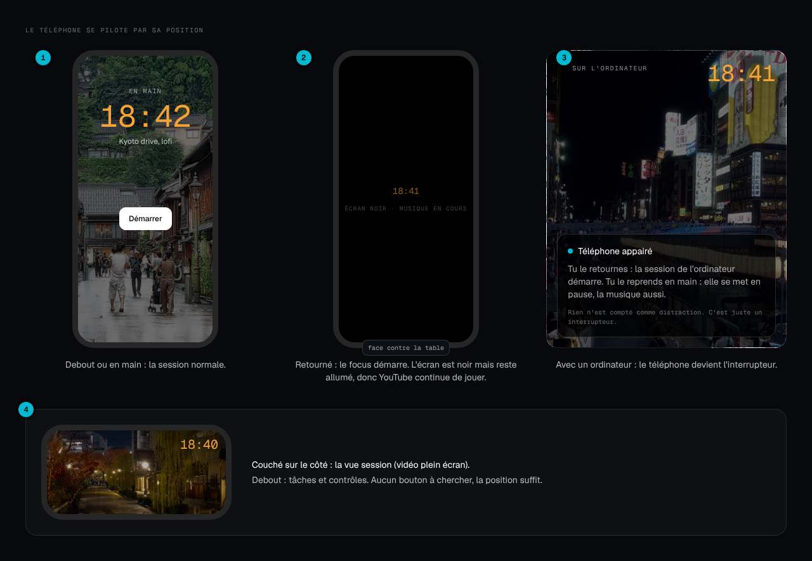
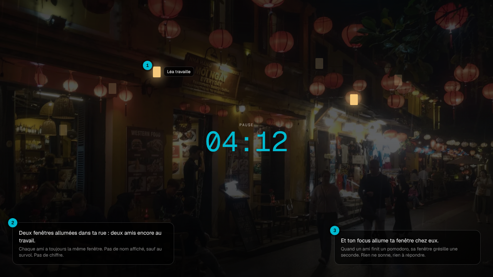
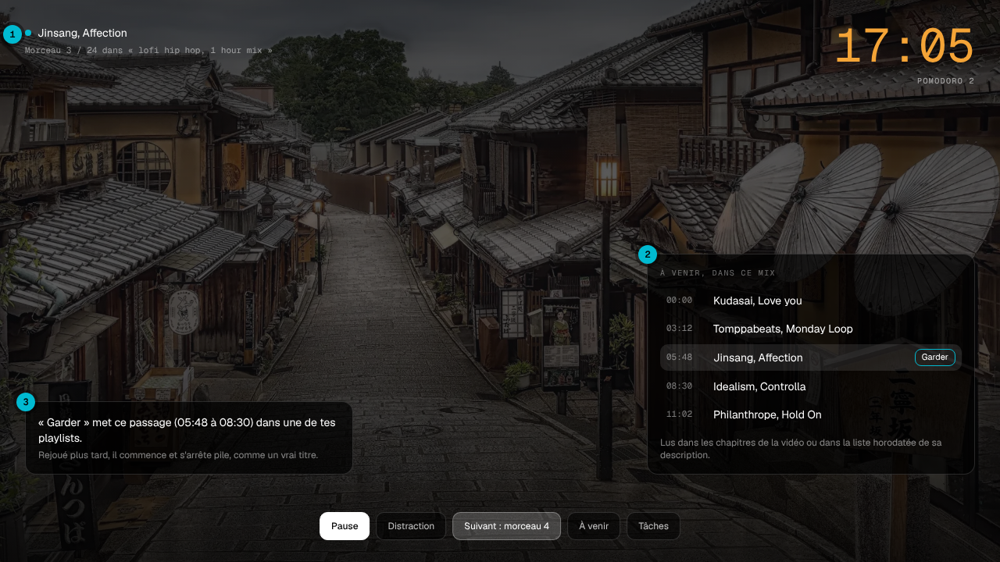
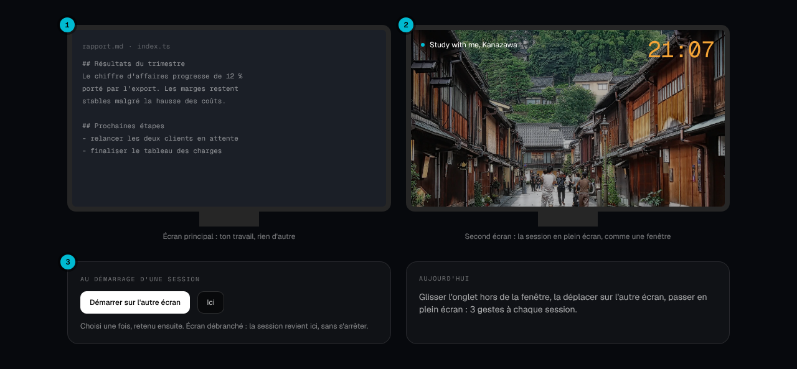
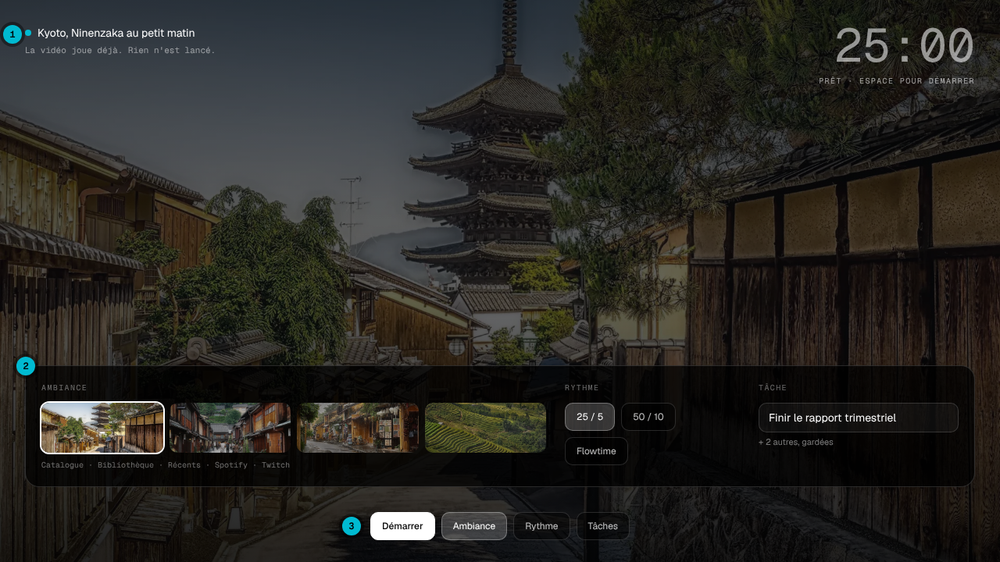
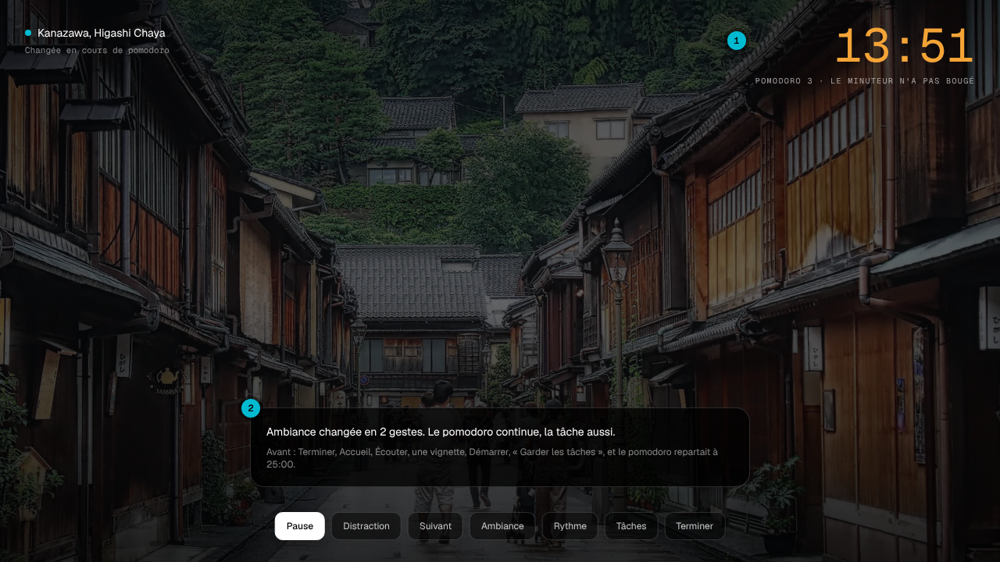
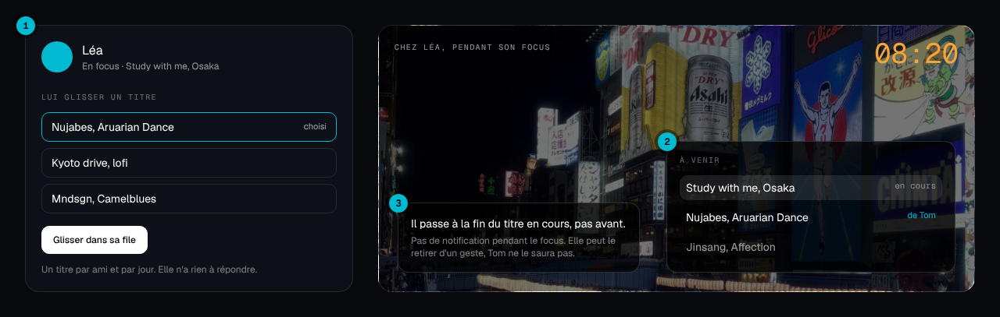
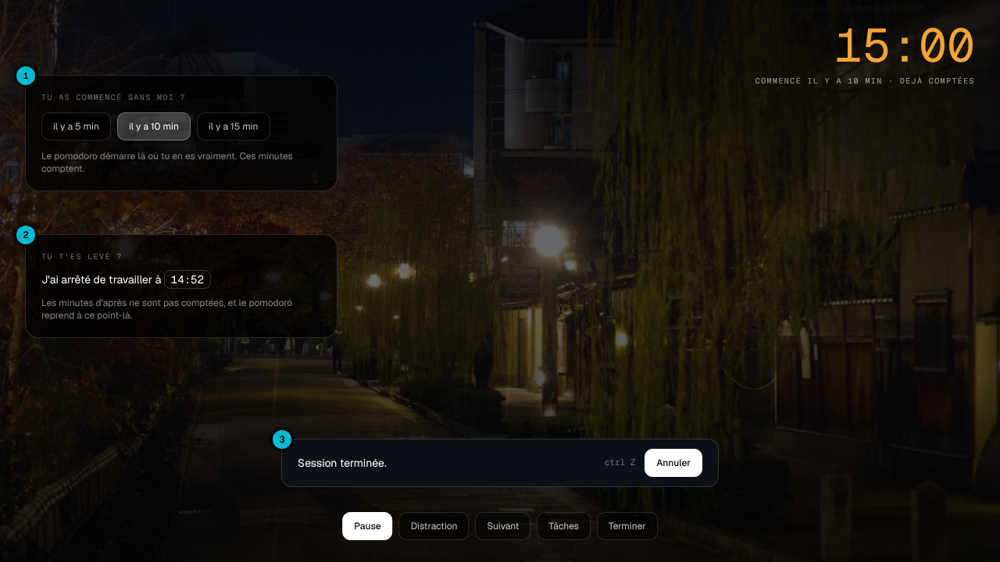
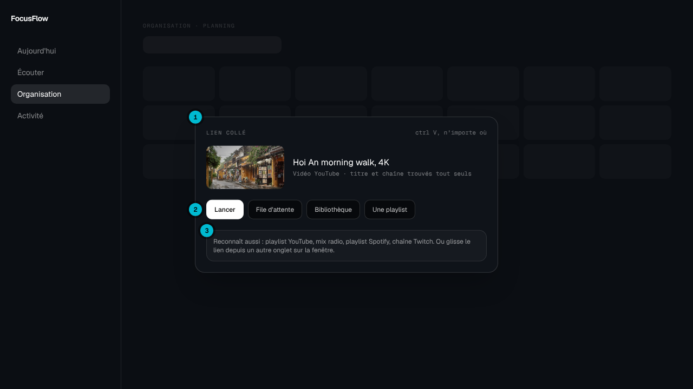
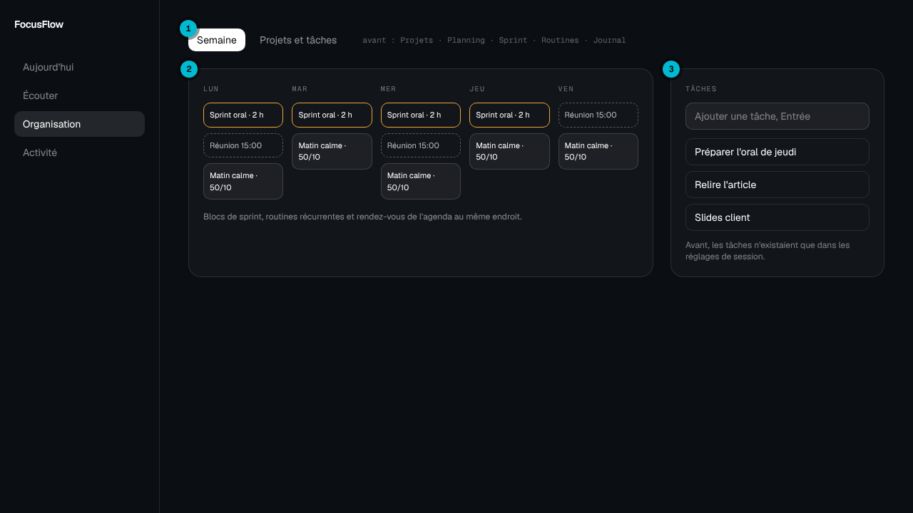

Rien n'est implémenté. Fonctionnel, ergonomie, design, amis, téléphone, et deux idées sur l'organisation des pages. Les maquettes sont statiques (/lab/features). Triées par audace puis par valeur. Les clics sont comptés dans le code réel, la nouveauté vérifiée chez les concurrents.
endsAt). Plusieurs idées ci-dessous s'appuient dessus, c'est dit à chaque fois. Rien ne reprend une idée refusée (voir DECISIONS.md).Les tâches n'ont pas de page. Le Kanban n'existe que dans /settings (avant la session) et dans le panneau de la session. « ＋ Créer › Tâche » (components/CreateMenu.tsx) envoie vers /settings, l'Organisation n'a pas d'onglet Tâches, et un sprint écrit ses tâches dans un Kanban qu'on ne voit qu'en préparant une session. Les idées 05 et 10 en tirent les conséquences.
« Fonctionne sans compte » n'est plus vrai en production. Dès que Supabase est configuré, components/AuthGate.tsx affiche la landing à tout visiteur non connecté : impossible d'essayer l'app sans Google. L'idée 05 propose d'y remédier sans rien perdre (la fusion des données anonymes au premier login existe déjà dans SupabaseProvider).
| # | Idée | Terrain | Audace | Valeur | Effort |
|---|---|---|---|---|---|
| 1 | Le téléphone se pilote par sa position | Téléphone | 4,5 | 4 | M |
| 2 | Les fenêtres allumées | Amis · design | 4,5 | 3 | M |
| 3 | Les morceaux dans les mixes | Lecteur | 3,5 | 4 | M |
| 4 | Sur l'autre écran | Ergonomie | 3,5 | 3,5 | S |
| 5 | La session sans antichambre | Navigation | 3 | 5 | L |
| 6 | Ta playlist Spotify, sans Premium | Lecteur | 3 | 4,5 | M |
| 7 | Un titre pour toi | Amis | 3 | 3 | S |
| 8 | Rien n'est perdu | Minuteur | 2,5 | 4 | S |
| 9 | Coller pour lancer | Ergonomie | 2,5 | 4 | S |
| 10 | Organisation en deux vues | Navigation | 2 | 3,5 | M |
Répartition : téléphone 1 · amis 2 · lecteur 2 · minuteur 1 · ergonomie 2 · navigation 2
Retourné face contre la table, le téléphone lance le focus et passe en écran noir sans couper la musique. Repris en main, il met en pause. Couché sur le côté, il montre la vidéo. Appairé à l'ordinateur, il devient l'interrupteur de la session du bureau.

Sur iPhone, une session FocusFlow meurt dès que l'écran se verrouille : Safari suspend la page, la vidéo YouTube s'arrête, le minuteur aussi. Pour garder la musique, il faut laisser l'écran allumé, en pleine lumière, à portée de main : exactement l'objet qui distrait. Et sur l'ordinateur, mettre en pause quand on se lève demande de revenir à l'onglet.
flowchart TD
O["DeviceOrientation : gravité Z"] --> P{"Position"}
P -- "face contre table" --> F["start + écran noir + Wake Lock"]
P -- "en main" --> M["pause (pas une distraction)"]
P -- "sur le côté" --> L["vue vidéo plein écran"]
F --> T["timerStore : endsAt"]
M --> T
F -- "appairé" --> B["canal broadcast de la télécommande"]
M -- "appairé" --> B
B --> PC["session de l'ordinateur : start / pause"]
Ce n'est pas un affichage : la position du téléphone est l'entrée de commande du minuteur et du lecteur. L'écran noir n'est pas cosmétique, c'est ce qui permet à YouTube de continuer sur un téléphone, là où le verrouillage le coupe. Une hystérésis (angle franchi pendant 600 ms) évite les déclenchements parasites.
Les apps « flip to focus » existent, mais elles chronomètrent sur le téléphone seul : Focus Flip, Flip Timer, Flipo. Le cube physique Timeular pilote un suivi du temps sur ordinateur, mais c'est un objet payant. Aucune ne fait du téléphone l'interrupteur d'une session de bureau, et aucune ne garde une vidéo en lecture écran retourné. Recherche faite : aucun résultat pour un retournement qui pilote un minuteur d'ordinateur.
lib/devicePose.ts (orientation, hystérésis, logique pure testée avec vitest) et un hook dans app/session/page.tsx. navigator.wakeLock (iOS 16.4+, Chrome Android).store/timerStore.ts : start/pause existants, sur endsAt (correctif acquis). lib/playback/* : play/pause existants.Pendant ta pause, chaque ami encore au travail est une fenêtre allumée dans ta rue de nuit. Toujours la même fenêtre pour le même ami. Pas de nom (sauf au survol), pas de chiffre, rien à répondre. Et ton focus allume ta fenêtre chez eux.

Le tiroir Amis est masqué sur /session, volontairement. Résultat : pendant une session on est seul, alors que la présence silencieuse des autres (le body-doubling) est justement ce qui aide à tenir. Afficher une liste d'amis, un classement ou une notification casserait la concentration et crée de la pression, ce que tu as refusé.
C'est de la « technologie calme » : l'information est dans le décor, à la périphérie, et ne demande rien. Une fenêtre allumée chez un voisin, c'est exactement le sentiment « je ne suis pas le seul à travailler ce soir », sans l'obligation de répondre ni de comparer.
flowchart LR
FS["friend_stats : in_focus, heartbeat (Realtime existant)"] --> A["lib/rue/friendWindows.ts : ami vers id de fenêtre"]
S["scene.json : liste des fenêtres"] --> A
A --> U["RueRenderer : uniform uFriendWin[8]"]
U --> SH["shader : windowOn() forcé à 1, teinte chaude"]
FS -- "in_focus passe à false" --> G["grésillement 1 s"]
G --> SH
Le shader de la rue a déjà un identifiant par fenêtre (ids.g, fonction windowOn() dans lib/rue/shaders.ts) et sait déjà les rallumer (événement « objectif atteint »). L'état réel des amis pilote le rendu : ce n'est pas un widget posé par-dessus, c'est la scène qui change.
La présence ambiante existe en liste ou en fil : Nook, Orbit, Grindoro (qui cache justement le fil pendant la session). Forest fait pousser des arbres ensemble, avec une mécanique de pression. Lounge (2021) dessinait des petites fenêtres jour/nuit sur des bureaux virtuels (TechCrunch), mais c'était un indicateur d'heure, pas de présence. Des amis rendus comme des fenêtres dans une vraie photo de rue : pas trouvé.
lib/rue/shaders.ts, lib/rue/RueRenderer.ts (uniform et méthode setFriends(ids)), components/RueScene.tsx, store/friendsStore.ts (déjà abonné en Realtime à friend_stats).scripts/rue/ qui les écrit dans scene.json.Un mix lofi d'une heure devient une vraie liste de morceaux : « Suivant » saute au morceau suivant dans la vidéo, « À venir » liste les titres du mix, et « Garder » enregistre un passage (de 05:48 à 08:30) qui se rejoue plus tard comme un titre normal.

Le catalogue est fait de longues vidéos : mixes d'une heure, Study With Me de trois heures. Dans une seule vidéo, « Suivant » change de vidéo (ou ne fait rien), « À venir » est vide, et le morceau qu'on adore à la 23e minute est perdu pour toujours : impossible de le retrouver, encore moins de le mettre dans une playlist.
flowchart TD
V["Vidéo longue"] --> R["/api/youtube/chapters : ytInitialData ou description"]
R --> C["lib/ytChapters.ts : liste de start, fin, titre"]
C --> Q["file maison : pistes virtuelles"]
Q -- "Suivant" --> SK["seekTo(début du morceau suivant)"]
Q -- "Garder" --> LP["localPlaylistStore : videoId + start + end"]
LP --> PL["loadVideoById avec startSeconds, endSeconds"]
PL -- "ENDED" --> NX["titre suivant de la file"]
Le modèle de piste change : une piste peut être un segment de vidéo. C'est la file maison qui gère, avec startSeconds/endSeconds de l'API IFrame, déjà utilisée pour enchaîner les titres.
Des extensions de navigateur sautent des chapitres sur youtube.com (YouTube Next Chapter Button) ou découpent les mixes en titres (Sonara). YouTube lui-même limite ses « clips » à une minute. Aucune app de focus ne traite l'intérieur d'un mix comme une file, et personne ne permet de mettre un passage de mix dans une playlist à côté de vrais titres.
app/api/youtube/chapters réutilisant lib/ytParse.ts (même travail que pour Calé sur la vidéo, à mutualiser). lib/ytChapters.ts en logique pure testée.lib/playback/types.ts (Track + start?/end?), lib/playback/youtube.ts, lib/playback/queue.ts, store/localPlaylistStore.ts (LocalTrack), components/session/UpNext.tsx, components/AddToMenu.tsx.Avec deux écrans, la session s'ouvre d'un clic en plein écran sur le second, et ton travail reste sur le premier. La rue devient une vraie fenêtre posée à côté de toi, avec le minuteur dans le coin de l'œil.

Pendant le focus, tu travailles dans une autre application. La session FocusFlow, faite pour être regardée, est cachée derrière. Ceux qui ont deux écrans bricolent à chaque session, et ceux qui ne le font pas ne voient jamais leur minuteur.
| Aujourd'hui | Avec l'idée |
|---|---|
| 1. Glisser l'onglet de la session hors de la fenêtre 2. Déplacer la nouvelle fenêtre sur l'autre écran 3. Bouton plein écran de la session (à refaire à chaque session) | 1. « Démarrer sur l'autre écran » (une seule fois) Les fois suivantes : 0 action, c'est retenu. |
| 3 actions par session | 1 action, puis 0 |
flowchart TD
S["Démarrer"] --> W{"getScreenDetails() disponible ?"}
W -- "non (Safari, Firefox)" --> P["comportement actuel + timer PiP existant"]
W -- "oui, 1 écran" --> P
W -- "oui, 2 écrans" --> F["requestFullscreen avec screen = écran secondaire"]
F --> R["prefsStore : écran préféré retenu"]
C["screenschange : écran débranché"] --> B["retour sur l'écran principal, session continue"]
On utilise la Window Management API de Chrome : la page choisit l'écran sur lequel elle se met en plein écran. Le comportement de la session change (où elle vit, ce qu'on voit pendant le travail), pas son apparence.
L'API existe depuis Chrome 100 (documentation Chrome), utilisée surtout par des outils de présentation. Aucune app de focus ne s'en sert : Pomofocus, Lofidoro, LifeAt restent dans leur onglet. Le minuteur flottant (PiP) reste le repli sur un seul écran.
app/session/page.tsx (le plein écran existe déjà via requestFullscreen), store/prefsStore.ts (écran préféré), aucune dépendance, pas de Supabase.La page Réglages disparaît. Choisir une ambiance ouvre directement la session « au seuil » : la vidéo joue déjà, le minuteur attend, et ambiance, rythme et tâche se règlent dans un tiroir de la session. Le même tiroir sert en cours de pomodoro, sans toucher au minuteur.


Le parcours actuel est une chaîne de cinq pages : accueil, Écouter, /settings, /session, /summary. On choisit sa vidéo sur une vignette sans l'entendre, et dès que la session tourne, tout est figé : changer de musique ou de rythme oblige à terminer la session, et handleStart appelle resetAll(), donc le pomodoro repart à 25:00.
/session au seuil, la vidéo en lecture.| Aujourd'hui | Avec l'idée |
|---|---|
Changer d'ambiance en cours : Terminer, Accueil (/summary), Écouter, sous-onglet, vignette, Démarrer (/settings), « Garder les tâches ». 7 actions, pomodoro remis à 25:00. | Ambiance, vignette. 2 actions, minuteur intact. |
| Passer de 25 à 50 min en cours : Terminer, Nouvelle session, preset, Démarrer, modale. 5 actions, compteur de pomodoros remis à zéro. | Rythme, 50/10. 2 actions. |
| Démarrer avec une autre ambiance depuis l'accueil : Autre ambiance, vignette, Démarrer, modale si tâches. 3 à 4 actions, 3 pages, vidéo choisie sans l'entendre. | Autre ambiance, vignette, Espace. 3 actions, 2 pages, la vidéo joue avant de s'engager. |
| Première visite : splash, Commencer, choix du compte Google, consentement, onboarding (ambiance, rythme, Lancer). 6 à 7 actions et une redirection OAuth. | Splash, Commencer, Espace. 3 actions, sans compte. |
flowchart LR
subgraph AV["Avant"]
A1["Accueil"] --> A2["Écouter"] --> A3["/settings"] --> A4["/session"] --> A5["/summary"]
A5 -. "changer de musique" .-> A1
end
subgraph AP["Après"]
B1["Accueil ou Écouter ou ⌘K"] --> B2["/session au seuil"]
B2 -- "Espace" --> B3["/session en cours"]
B3 -- "Ambiance, Rythme" --> B3
B3 --> B4["/summary"]
end
Changer de station en cours de minuteur existe chez les apps lofi tout-en-un (LifeAt, lofi.co : on choisit fond et musique puis on démarre, guide LifeAt), mais leur minuteur est un widget à côté de la musique. Ce qui est nouveau ici : essayer l'ambiance en plein écran, en lecture réelle, avant que le minuteur parte, puis changer de rythme sans perdre le pomodoro. L'audace est moyenne, je l'assume : c'est d'abord une réorganisation, et c'est celle qui fait gagner le plus d'actions.
app/settings/page.tsx devient une redirection ; son contenu (presets, Kanban, Coach, « enregistrer comme routine ») passe dans un tiroir de app/session/page.tsx. Les router.push("/settings") de app/page.tsx (lignes 1093 à 1131, 1282), de components/TodayDashboard.tsx (550) et de app/summary/page.tsx pointent vers /session.lib/playback/useSessionMedia.ts : changer de source sans démonter la session. store/timerStore.ts : nouvel état « prêt » (pas lancé), changement de rythme sans resetAll().components/AuthGate.tsx : laisser passer /session sans compte. store/navStore.ts, components/AppNav.tsx, components/CommandPalette.tsx (entrée « Réglages »).endsAt, avec les e2e existants.Tu glisses un morceau dans la file d'un ami en focus. Il passe à la fin de son titre en cours, marqué « de Tom » dans À venir. Pas de notification, rien à répondre, et il peut le retirer sans que tu le saches.

Entre amis, l'encouragement existe (une vague de lumière), le chat aussi. Mais le geste le plus naturel entre gens qui travaillent en musique, « écoute ça », n'a pas de forme qui respecte le focus : un lien dans le chat sort l'autre de sa session.
flowchart LR
T["Tom : FriendChat"] --> M["friend_messages : corps réservé ::titre::videoId"]
M --> R["Realtime chez Léa (existant)"]
R --> C{"Léa en session ?"}
C -- "oui" --> E["adapter.enqueue(track, from: Tom)"]
C -- "non" --> Q["queueStore : ajout en tête, marqué"]
E --> U["UpNext : de Tom"]
Même schéma que l'encouragement (CHEER_BODY dans lib/friends.ts) : un message au corps réservé, donc aucune migration. Côté lecteur, PlayerAdapter.enqueue() existe déjà et place le titre juste après le titre en cours.
Spotify Jam partage une file entre gens qui écoutent ensemble, en direct. Ici chacun a sa session et sa musique ; le titre est un cadeau asynchrone qui attend le bon moment. Ce n'est pas « écouter pareil qu'un ami » (refusé) : on n'écoute jamais en même temps, et aucune réponse n'est attendue.
lib/friends.ts, store/chatStore.ts, components/FriendChat.tsx, components/session/UpNext.tsx, lib/playback/types.ts (Track.from?), store/queueStore.ts. Supabase : rien de nouveau (table friend_messages et RLS existantes). Limite d'un par jour côté client, comme l'encouragement.Trois rattrapages en un geste. « J'ai commencé il y a 10 min » démarre le pomodoro là où tu en es vraiment. « J'ai arrêté à 14:52 » retire les minutes où tu n'étais plus là. Et « Terminer » s'annule pendant 10 secondes (ou ctrl Z).

On commence souvent à travailler avant d'ouvrir le minuteur : ces minutes ne comptent jamais. À l'inverse, on se lève pour un appel et le pomodoro se termine sans nous, compté comme fait. Et un « Terminer » par erreur envoie sur le résumé : la session est perdue.
| Aujourd'hui | Avec l'idée |
|---|---|
| Commencé il y a 10 min : impossible, les minutes sont perdues ou il faut un preset personnalisé à 15 min (Réglages, Personnalisé, moins 10, Démarrer : 4 actions). | « il y a 10 min » : 1 action, minutes comptées. |
| Parti pendant 8 min : impossible de corriger, le pomodoro est compté entier. | « J'ai arrêté à 14:52 » : 2 actions. |
| Terminer par erreur : Nouvelle session, Démarrer, « Garder les tâches » : 3 actions, pomodoro remis à 25:00 et compteur à zéro. | Annuler : 1 action, session exactement comme avant. |
flowchart TD
E["timerStore.endsAt (correctif acquis)"] --> A["commencé il y a x : endsAt = maintenant + durée - x"]
E --> B["arrêté à h : minutes = h - début ; reprise depuis ce point"]
S["Terminer"] --> SN["snapshot : timer, file, position, stats du jour"]
SN --> SUM["/summary + bandeau Annuler 10 s"]
SUM -- "Annuler" --> RS["restaure le snapshot, retire l'enregistrement"]
Avec un minuteur calculé depuis une échéance, déplacer le début ou la fin est un calcul, pas un hack. L'annulation garde un instantané avant recordSession et le rétablit, statistiques comprises : ce n'est pas un bouton « retour », c'est une transaction qu'on défait.
Les outils de suivi du temps permettent de corriger un début (ClickUp le réclame dans sa liste de demandes, MultiTimer démarre « avec le temps écoulé »). Les minuteurs Pomodoro, non : pas trouvé d'app qui propose « j'ai commencé il y a ». L'audace est faible, la valeur quotidienne élevée.
store/timerStore.ts, store/statsStore.ts (recordSession et son inverse), store/playHistoryStore.ts, app/session/page.tsx (handleStop), app/summary/page.tsx, components/Toast.tsx. Pas de Supabase nouveau (la synchro suit les stores).upsertWorkSession), sinon le serveur garde la session.Ctrl V n'importe où dans l'app avec un lien YouTube, Spotify ou Twitch : une carte apparaît avec le titre trouvé tout seul, et « Lancer » démarre. Glisser le lien depuis un autre onglet marche aussi.

On trouve sa musique ailleurs : sur YouTube, dans un message, sur Spotify. Pour la jouer, il faut traverser l'interface jusqu'au bon formulaire, et la modale d'ajout de vidéo demande même de taper le titre à la main.
app/page.tsx)| Aujourd'hui | Avec l'idée |
|---|---|
| 1. Écouter 2. Ma bibliothèque 3. Ajouter (vidéo) 4. Coller l'URL 5. Taper un titre (obligatoire) 6. Ajouter 7. Cliquer la carte 8. Démarrer ( /settings) | 1. Ctrl V 2. Lancer |
| 8 actions, 2 pages | 2 actions, depuis n'importe quelle page |
flowchart LR
P["paste ou drop sur la fenêtre, hors champ de saisie"] --> D["lib/linkDetect.ts : type de lien"]
D -- "vidéo YouTube" --> O["oEmbed : titre, chaîne (fetchVideoMeta existant)"]
D -- "playlist ou mix RD" --> PL["/api/youtube/playlist ou mix"]
D -- "playlist Spotify" --> SP["mode Spotify ou idée 06"]
D -- "chaîne Twitch" --> TW["twitchStore"]
O --> C["carte : Lancer, File, Bibliothèque, Playlist (AddToMenu)"]
PL --> C
SP --> C
TW --> C
Un écouteur global de collage et de dépôt, et un détecteur de liens en logique pure. Les actions réutilisent AddToMenu et les helpers existants : seul le chemin d'entrée change.
Coller un lien pour l'intégrer est courant dans les outils de notes (Notion). Dans une app de focus, je ne l'ai vu nulle part : Lofidoro et LifeAt imposent leurs stations, Pomofocus n'a pas de lecteur. Différence avec « Lancer en une phrase » (validée) : ici pas besoin d'ouvrir ⌘K ni de taper, le collage seul suffit, sur toute page, et le dépôt d'un lien marche aussi.
app/layout.tsx (à côté de CommandPalette), nouveau lib/linkDetect.ts testé (réutilise extractYouTubeId de data/videos.ts), store/queueStore.ts (fetchVideoMeta), components/AddToMenu.tsx. Le champ titre de AddVideoModal peut devenir optionnel par la même occasion. Pas de Supabase.Les cinq sous-onglets d'Organisation (Projets, Planning, Sprint, Routines, Journal) deviennent deux vues : « Semaine », où blocs, sprints, routines et rendez-vous vivent sur la même grille, et « Projets et tâches », où les tâches ont enfin une page.

Un sprint écrit à trois endroits : ses blocs dans Planning, ses tâches dans le Kanban de /settings, son état dans l'onglet Sprint. Une routine est une session récurrente, mais vit à part du planning. Et ajouter une tâche depuis l'accueil fait quitter l'app pour la page de préparation de session.
| Aujourd'hui | Avec l'idée |
|---|---|
Ajouter une tâche : ＋ Créer, Tâche (part sur /settings), taper, Entrée, Retour. 5 actions, 2 changements de page. | Organisation, taper + Entrée. 2 actions, aucune page quittée. |
| Voir ce qu'un sprint a produit : Sprint, Planning, puis ＋ Créer, Tâche pour voir le Kanban. 4 actions, 3 endroits. | Semaine. 1 action, un seul endroit. |
| Sous-onglets : 5 (et 3 dans Activité). | 2. Le Journal rejoint Activité, à côté du résumé de session qui l'alimente. |
flowchart TD
subgraph Semaine
PB["planStore : blocs"]
SP["sprintStore : blocs de sprint"]
RT["routineStore : récurrence"]
AG["agenda iCal (validé)"]
end
subgraph ProjetsTaches["Projets et tâches"]
PR["projectStore"]
TK["sessionStore.todos (sorti de /settings)"]
end
PB --> G["grille unique"]
SP --> G
RT --> G
AG --> G
Ce n'est pas un relooking : les données sont déjà reliées (un sprint crée des blocs et des tâches), seule l'interface les sépare. On regroupe selon le temps (Semaine) et selon le contenu (Projets et tâches). Une routine devient un bloc récurrent qu'on peut placer, au lieu d'une liste à part.
Honnêtement, peu : les agendas de travail (Sunsama, Akiflow) mêlent déjà tâches et blocs. C'est une proposition d'organisation, demandée explicitement, qui corrige un vrai trou (les tâches sans page) et complète l'idée 05.
app/page.tsx (lignes 1745 à 1767), store/navStore.ts (OrgTab), components/WeekPlanner.tsx, components/SprintWizard.tsx (devient un formulaire ouvert depuis Semaine), components/RoutinesManager.tsx, components/TodoList.tsx, components/CreateMenu.tsx, components/CommandPalette.tsx. Routines récurrentes : un champ days? dans lib/routines.ts, synchronisé via user_state existant. Pas de table nouvelle./settings reste en place.| Idée écartée | Raison | Remplacée par |
|---|---|---|
| Mixer l'image d'une vidéo et le son de sa playlist | LifeAt et lofi.co le font déjà (fond visuel + Spotify), et ça frôle les ambiances mixables refusées. | Ta playlist Spotify, sans Premium |
| Calé sur un live Twitch (pomodoro d'un streamer lu dans le chat) | Un minuteur partagé avec des inconnus en direct : trop proche des Focus Rooms refusées. | Les morceaux dans les mixes |
| La rue qui passe du crépuscule à la nuit au fil du pomodoro | Cosmétique, variante de l'arbre qui pousse de Forest, et la rue n'est jamais sous une vidéo. | Les fenêtres allumées |
| Le téléphone enceinte de la session | C'est Spotify Connect appliqué à YouTube, et ça recoupe la télécommande validée. | Le téléphone se pilote par sa position |
| Retirer le casque met en pause | Pause automatique sur un signal matériel : trop proche de la détection automatique refusée. | (non retenue) |
| « La musique ne s'arrête jamais » (repli sur erreur) | Déjà fait : l'adaptateur YouTube saute les titres illisibles (errorStreak). | Rien n'est perdu |
| Retrouver un morceau entendu (journal par heure) | Affichage d'historique déguisé. Le vrai besoin (garder un passage) est couvert par l'idée 03. | Les morceaux dans les mixes |
| Une tâche se lance d'un ▶ | Trop proche de « Go sur les blocs », refusée. | (non retenue) |
| Masquer les chiffres du minuteur la première moitié | Un réglage d'affichage, pas un changement de comportement. | Sur l'autre écran |
| Écouter ce que tes amis gardent | Variante de « écouter pareil qu'un ami » et de « tes titres qui marchent », refusées. | Un titre pour toi |
Contrôles faits sur les dix : aucune ne crée de pression sociale (pas de compteur, pas de réponse attendue, pas de comparaison), aucun gadget sonore, aucune stat. Les idées 05, 08 et 10 sont d'audace modeste ; elles sont là parce que tu as demandé de l'organisation et de la fluidité, et leurs gains sont chiffrés. Les idées 01, 05 et 08 supposent le correctif endsAt, déjà prévu.